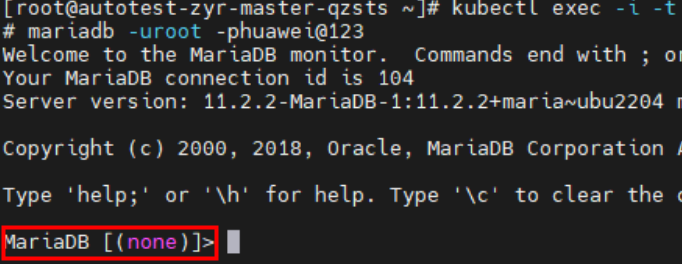

If there are multiple pre- or post-processing commands for creating a snapshot for a PVC, you can write multiple pre-executed commands to the same script and save the script to the persistent directory of a container. Running the script to execute multiple commands simplifies the command input process.
The following are examples of the pre- and post-processing commands:
#Pre-processing command script
#!/bin/bash
#Run the following command to connect to the database. In the command, root is the username and huawei@123 is the database password. Replace them with the actual ones.
if mariadb -uroot -phuawei@123 -e "SELECT 1;" 2>/dev/null; then
#If the MairaDB database is connected, run the following command to lock tables. If the table locking command is executed successfully, 200 is displayed in the echo command output. The system invokes the sleep command to lock the MairaDB database.
#Note: The lock duration of the MairaDB database is longer than the backup duration.
mariadb -uroot -phuawei@123 -e "flush tables with read lock;system echo "200";system sleep 3000;"
else
#Failed to connect to the database.
echo "0"
fi
#Post-processing command script
#!/bin/bash
#If you need to stop execution of the pre-processing script in advance, forcibly stop the sleep process in the pre-processing script. In the command, set grep based on the execution result of ps -ef in the actual environment, and change the field printed in awk based on the PID column in the execution result of ps -ef.
pid=$(ps -ef | grep "/bin/sh -c /var/lib/mariadb/backup/dataprotect_mysql_consistency_pre_script.sh" | grep -v grep | awk '{print $2}')
#Note: If the process ID of the pre-processing script does not exist in the system, execution of the pre-processing script has ended before the post-processing script is invoked to unlock the MairaDB database. In this case, the backup data may be inconsistent. As a result, the post-processing script fails to be executed.
[ ! $pid ] && echo "pid is null" && echo "0" && exit
#Forcibly stop the sleep process in the pre-processing script to unlock the MairaDB database.
subtree=$(pstree -p $pid) subtree=$(pstree -p $pid)
right_str=${subtree##*\(}
sleep_pid=${right_str%*)}
kill -9 $sleep_pid
kill -9 $pid
#The database is unlocked successfully.
echo "200"
Procedure
- Upload the scripts to any persistent directory of the container. Run the following commands on the container page to add permissions to the script files:
chmod +x /var/lib/mariadb/backup/dataprotect_mysql_consistency_pre_script.sh chmod +x /var/lib/mariadb/backup/dataprotect_mysql_consistency_post_script.sh
- Run the following command to log in to the MariaDB database:
mariadb -uroot -phuawei@123
root indicates the username, and huawei@123 indicates the database password. Replace them with the actual ones. If the following information is displayed, the database is successfully accessed.

- Modify all related contents in the scripts and save the settings.
- Replace postgres in the command with the actual password of the user.
export PGPASSWORD='postgres'
- In the following operations, the pre-processing script location /var/lib/mariadb/backup/dataprotect_mysql_consistency_pre_script.sh and post-processing script location /var/lib/mariadb/backup/dataprotect_mysql_consistency_post_script.sh are used as examples. You can modify the content based on the actual script locations.
- Replace postgres in the command with the actual password of the user.
- Add pod labels and annotations by referring to Pod Configuration in the Production Environment for Application-Consistent Backup (General). The following shows examples of the pre- and post-processing commands entered when you add annotations:
#Pre-processing command kubectl annotate pod -l label=value -n namespace pre.hook.dataprotect.backup.io/command='["/bin/sh", "-c","/var/lib/mariadb/backup/dataprotect_pgsql_consistency_pre_script.sh"]' #Post-processing command kubectl annotate pod -l label=value -n namespace post.hook.dataprotect.backup.io/command='["/bin/sh", "-c","/var/lib/mariadb/backup/dataprotect_pgsql_consistency_post_script.sh"]'

To ensure that the pre- and post-processing commands can be executed properly, the script locations in the commands must be the same as the actual locations to which the scripts are uploaded.